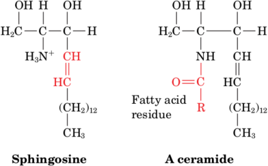

Sphingolipids
Sphingolipids are amino alcohol derivativesare and also major membrane components. They were named after the Sphinx because their function in cells was at fi rst mysterious. Most sphingolipids are derivatives of the C18 amino alcohol sphingosine, whose double bond has the trans confi guration. The N-acyl fatty acid derivatives of sphingosine are known as ceramides:
Sphingomyelins
Sphingomyelins, are the most common sphingolipids, are ceramides bearing either a phosphocholine or a phosphoethanolamine head group, so they can also be classifi ed as sphingophospholipids. They typically make up 10 to 20 mol % of plasma membrane lipids. Although sphingomyelins differ chemically from phosphatidylcholine and phosphati-dylethanolamine, their conformations and charge distributions are quite similar (compare Figs. 9-4 and 9-7). The membranous myelin sheath that surrounds and electrically insulates many nerve cell axons is particularly rich in sphingomyelins.
Cerebrosides
Cerebrosides are ceramides with head groups that consist of a single sugar residue. These lipids are therefore glycosphingolipids. Galactocerebro-sides and glucocerebrosides are the most prevalent. Cerebrosides, in contrast to phospholipids, lack phosphate groups and hence are nonionic.
Gangliosides
Gangliosides are the most complex glycosphingolipids. They are ceramides with attached oligosaccharides that include at least one sialic acid residue. The structures of gangliosides GM1, GM2, and GM3, three of the hundreds that are known, are shown in Fig. 9-9. Gangliosides are primarily components of cell-surface membranes and constitute a significant fraction (6%) of brain lipids.
Gangliosides have considerable physiological and medical significance. Their complex carbohydrate head groups, which extend beyond the surfaces of cell membranes, act as specifi c receptors for certain pituitary glycoprotein hormones that regulate a number of important physiological functions. Gangliosides are also receptors for certain bacterial protein toxins such as cholera toxin. There is considerable evidence that gangliosides are specifi c determinants of cell–cell recognition, so they probably have an important role in the growth and differentiation of tissues as well as in carcinogenesis. Disorders of ganglioside breakdown are responsible for several hereditary sphingolipid storage diseases, such as Tay-Sachs disease, which are characterized by an invariably fatal neurological deterioration in early childhood. Sphingolipids, like glycerophospholipids, are a source of smaller lipids that have discrete signaling activity. Sphingomyelin itself, as well as the ceramide portions of more complex sphingolipids, appear to specifi cally modulate the activities of protein kinases and protein phosphatases (enzymes that remove phosphoryl groups from proteins) that are involved in regulating cell growth and differentiation.